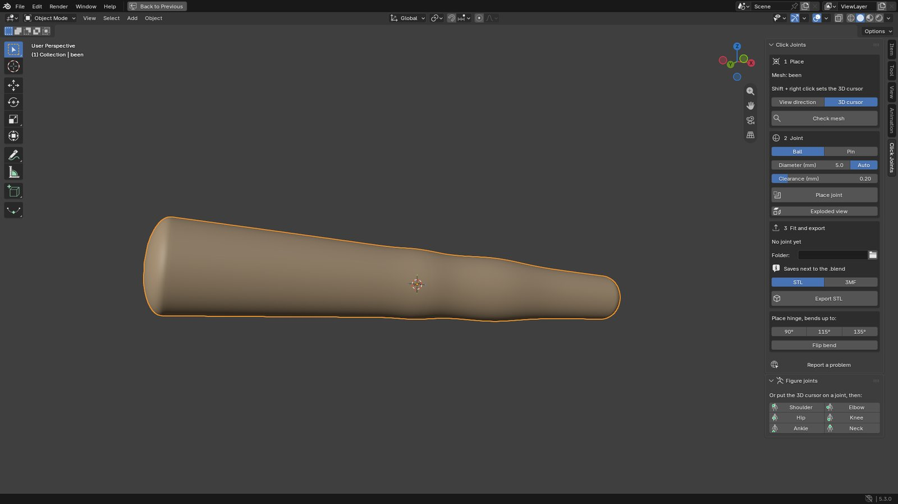
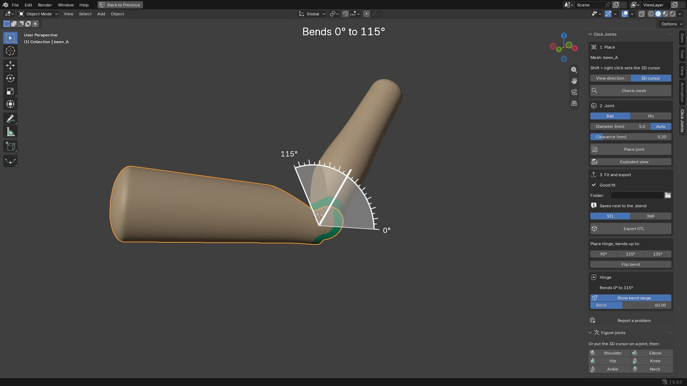
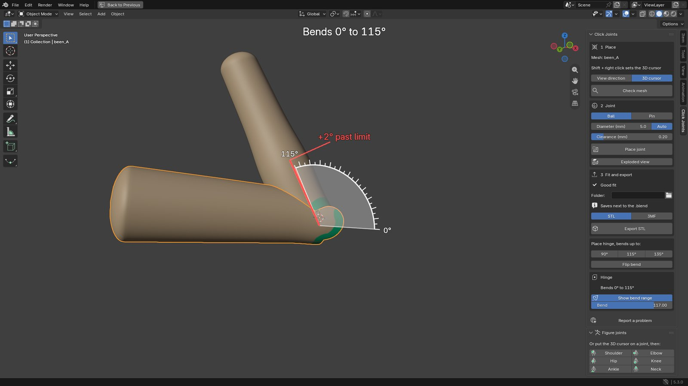

Guide · Blender for 3D printing
How to make joints in Blender for 3D printing: a hinge with an end stop
A knee or an elbow should bend one way and stop. Not swing all the way round, and not bend backwards. This page shows how to cut that kind of hinge into a model in Blender, how big the gap should be, and how to see how far it bends before you print.
Why a pin and a hole is not enough
The usual way by hand: cut the limb in two, put a cylinder through both parts as a pin, and subtract a slightly larger cylinder for the hole. Three things only show up after the print:
- Nothing stops it. A plain pin turns as far as the parts let it. The leg bends backwards, or the lower part flops all the way round. A real knee needs an end stop in front and a stop at the back.
- The gap is wrong somewhere. The gap has to be the same around the pin, between the side faces, and at the stop faces. One spot that is too tight and the joint is fused.
- You do not know the angle. Where the parts hit depends on the shape of the cut. You find out when the figure can not sit down.
The steps below use the hinge in Click Joints Pro, a Blender add-on made by us at Dortus. If you work by hand, the numbers in What gap to use still apply.
Step by step
- Install Click Joints Pro (Blender 4.2 or newer): Edit, Preferences, Get Extensions, then in the menu at the top right Install from Disk, and pick the zip. Then press N in the 3D viewport and open the Click Joints tab.
- Check the model. Select it and click Check mesh. The model has to be in millimetres and watertight; the panel offers Convert to mm or Make watertight if needed.
- Set the 3D cursor on the knee. Shift + right click on the spot where the hinge goes. Choose whether the hinge axis follows the view direction (look at the knee from the side) or the 3D cursor.
- Place the hinge. Set the clearance under 2 Joint (0.20 mm by default). Then under Place hinge, bends up to: click 90°, 115° or 135°. The limb is cut into two watertight parts with the stop built in. Bends the wrong way? Click Flip bend.
- Check the range. With one part selected, the box Hinge shows the measured range, for example Bends 0° to 115°, and a protractor on the model. Drag Bend to bend the part in the viewport.
- Export. Under 3 Fit and export pick STL or 3MF and click Export STL (or Export 3MF). You get one file per part, in millimetres. After printing you push the two parts together: the sides flex out a little over the bumps (see below).


What gap to use
- Clearance: start at 0.20 mm. Click Joints keeps that gap everywhere between the two parts: around the knuckle, along the sides and at the stop faces. Between 0.1 and 0.3 mm is typical for FDM and resin; a looser printer needs more.
- The stop is the angle you pick. The stop faces are cut so the parts touch at 90°, 115° or 135°, and Click Joints measures the real stop on the cut parts. In the screenshot it measured 114.96° for 115°.
- A small bump holds it together. On each side of the hinge a small bump sits in a dimple, 0.25 mm past the clearance, which is meant to keep the lower part on the knuckle. On a thin part it makes the bump smaller, or tells you the spot is too tight instead of placing a weak hinge.
These numbers are measured in Blender. Print the Fit test strip first: every printer is different.
What happens past the stop
Drag Bend past the measured stop and a red line marks the stop, with a label like +2° past limit. That is where the two parts would hit, measured in Blender.

A whole figure at once
Has your figure got a rig? Then Figure from rig in the panel Figure joints places every joint in one go: hinges at the elbows and knees, ball joints at the shoulders, hips and neck. If a bone has a Limit Rotation constraint, the hinge stops at that angle. No rig: put the 3D cursor on a joint and click Shoulder, Elbow, Hip, Knee, Ankle or Neck. The whole route: Articulated figure in Blender from your rig.
Only need ball joints? Those are in the free version. See How to make a ball joint in Blender for 3D printing.